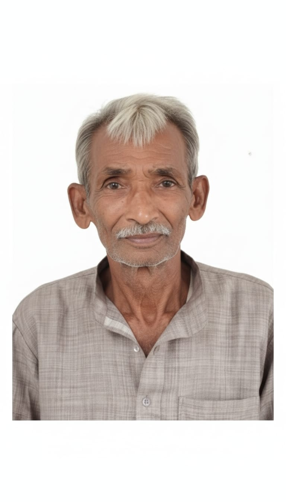

Our Founding Visionaries
The pioneers who laid the foundation for our institution

Mr. Horam Singh
Founder (2002-Present)
A visionary educator who established SRIC with the philosophy that "Education should empower students to think critically and serve society." He laid the foundation for our academic excellence.

Mr. Yespal Singh
Co-Founder & Educator (2002-Present)
Instrumental in developing our science programs and laboratories. His dedication to practical learning shaped our hands-on approach to science education.

Mr. Khempal Singh
Principal (2005-Present)
Led the expansion to senior secondary education and established our scholarship program to make quality education accessible to all deserving students.